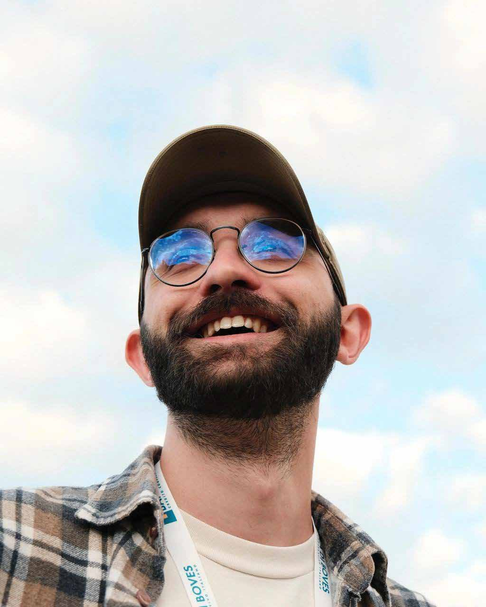

Sono Stefano. Progetto interfacce, ma ho iniziato dal branding e porto con me l'abitudine a dare a ogni prodotto una voce sua.

In breve
Mi sono laureato prima al Politecnico di Torino e poi al Politecnico di Milano. Dalle due realtà ho imparato un po' dei loro opposti e delle loro contraddizioni: dal rigore e tecnicismo sabaudo alla vendibilità ed estetica meneghina. Cerco di combinarli al meglio che posso.
Poi il passaggio dal branding alla UI/UX: cosa ti ha spinto e cosa ti sei portato dietro. È la parte che ti distingue da chi arriva solo da uno dei due mondi.
Scarica il CV ↓Esperienze
Brand e UI/UX designer · Club Deal
Piattaforma che mette in contatto imprenditori privati e startup del Nord Italia. Vedi il progetto →
Co-founder, CDO & CMO · Hoomie
Startup che aiuta studenti e fuorisede a trovare casa e coinquilini più facilmente. Vedi il progetto →
Restyling del logo · SI.EL. srl
Azienda di impiantistica elettrica, automazione e servizi per l'energia. Vedi il progetto →
Co-organizzatore · Ventinove Fest
Festival musicale e culturale di Cuneo, la mia città natale. Oltre all'organizzazione ho curato la comunicazione a 360°: brand identity, ADV digitali e fisici, social media. Vedi il progetto →
Tirocinio · Isao Hosoe Design
Studio fondato da Isao Hosoe nel 1985. Mi sono occupato di brand integration per un'importante azienda italiana: branding, generazione di concept, modelli 3D e rendering.
Formazione
Laurea Magistrale in Integrated Product Design
Politecnico di Milano
Corso di pre-accelerazione per startup
InnoVentureLab
Laurea in Design e Comunicazione Visiva
Politecnico di Torino
Percorso Giovani Talenti
Politecnico di Torino
Strumenti
- Figma
- Claude
- Claude Code
Come uso l'AI
L'AI per me è un addetto. Io faccio il project manager.
Sto ancora capendo dove passa il confine, ma per ora la vedo così: le affido i compiti, controllo il lavoro e decido cosa tenere.
In Figma la uso per le parti ripetitive: generare componenti e varianti, passare un sistema da chiaro a scuro, ritoccare immagini senza aprire Photoshop.
L'effetto più grande però è sul processo: arrivare a un mock-up interattivo oggi è molto più veloce, la rifinitura no.
Più veloce, ma con il rischio di perdere il contatto con la materia e saltare le euristiche tipiche di chi fa ricerca.
Si arriva in fretta a qualcosa da provare.
Dura ancora a lungo: è qui che passa la maggior parte del tempo.
Tempo→
Questo sito ne è un esempio: l'ho costruito con Claude Code. La prima versione è arrivata in fretta, poi sono venuti i giri di rifinitura: ricostruire in HTML i testi delle slide perché si potessero tradurre, togliere effetti che non funzionavano, sistemare le copertine.
Fuori dal lavoro
Sto costruendo da solo Coniuratio, un videogioco: storia, grafica e interfaccia. È il posto dove sperimento quello che poi porto nel lavoro. Guarda a che punto è →
Ho una fortissima passione per il design industriale, che cerco di coltivare ancora oggi.